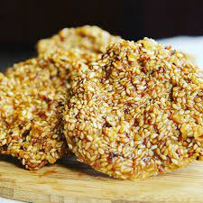

Home
Benny Cake

Who know sesame's could!
A sweet savoury cake made simple.. & with sesame seeds!
Ingredients
- 1 1/2 Cups Benny Seeds (Sesame Seeds)
- 2 cups of Sugar
- 1 Cup of Water
- A pinch of Salt
Steps
- Heat a frying pan on medium heat and add seeds. Stir continuously until seeds have browned evenly. Then remove from pan. Set aside for later
- Combine sugar, salt and water, stir constantly until mixture comes to a boil.
- Add benny seeds to liquid mixture and continue to stir with a wooden spoon to avoid mixture from burning.
- Adjust heat and simmer until the mixture coats the spoon and is golden brown in color.
- Drop rounded tablespoonfuls onto a greased pan and let it set until cool and firm.